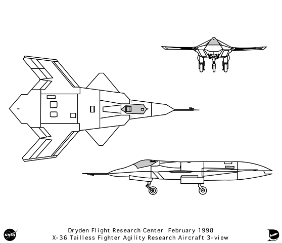

X-36
E sua relevância.
Sobre a Aeronave

O X-36 foi um pequeno avião experimental furtivo não tripulado, com uma fuselagem baseada em um caça comum, mas não possuía um estabilizador vertical.
Foi usado pela NASA em pesquisas de alta manobrabilidade, para o desenvolvimento de futuras tecnologias de voo para a Força Aérea dos Estados Unidos.
Sua aparência assemelha uma nave futurista, com sua cor branca e design minimalista.
A designação “X” significa “experimental”. Supõe-se que seja uma nova geração de caças supersônicos. Ele foi projetado em um esforço conjunto entre a Boeing e a NASA.
Concepção e desenvolvimento
Desde o começo foi projetada para ser uma aeronave sem as duas superfícies estabilizadoras convencionais, existentes na maioria das aeronaves, Estabilizador Vertical (Leme) e Estabilizador Horizontal (Profundor), e também possuía vetorização por impulso (como o X-31), dois canards, um avançado sistema de fly-by-wire para estabilizá-la e não era tripulada, a imagem era gerada através de uma câmera instalada no nariz da aeronave, para dar uma imagem em tempo real do voo e esta era enviada para uma estação de monitoramento remoto de superfície.
Como os testes estavam sendo realizados durante a compra da McDonnell Douglas com a Boeing a aeronave é muitas vezes referida equivocadamente como Boeing X-31. A primeira das duas aeronaves construídas teve seu voo inaugural em 17 de maio de 1997, e os resultados do programa ultrapassaram as metas das empresas envolvidas, onde mostrou-se uma grande capacidade para manobras, um dos requisitos dos caças na USAF e no mundo, porem, a velocidade máxima de 375 quilômetros por hora o tornaria facilmente passível de ser abatido. Uma versão maior, tripulada, e com um motor mais potente que o levasse a velocidades supersônicas deveria ser criada para que se tornasse um verdadeiro caça. Atualmente não há informações de uma aeronave semelhante em serviço.
Influência na Cultura Pop
Devido a seu design futurista, a aeronave X-36 acaba sendo usada como referência em vários jogos de tiro, jogos como Airforce Delta e Strikers 1999.
Ambos os jogos fizeram com que a X-36 fosse uma aeronave jogável.
De acordo com a descrição no próprio jogo:
"Suas falhas foram corrigidas e seu desempenho melhorado, e ele foi rebatizado de F-25.
As novas capacidades operacionais proporcionadas pela sua construção sem cauda e pela sua capacidade de
comunicação por link de dados com outros tipos de aeronaves provocaram uma revolução na próxima geração de aeronaves estratégicas."
Conhecido como F-25C Warbler neste jogo, é um avião decente no meio do jogo, com estatísticas decentes em todos os aspectos, bem como Stealth e um grande alcance de 4. No ponto em que pode ser desbloqueado, é uma nave bastante decente, embora uma vez que você desbloqueie coisas como o YF-26ER Swan e MiG-1.44 MFI, este avião começará a ser superado.
O X-36 é um caça secreto em Strikers 1945 III que pode ser desbloqueado por um determinado dipswitch como o código 1999.
No jogo em si ele é nomeado como "X-36 Warlord". No jogo, o X-36 se move mais rápido do que qualquer outro jato do jogo. É bastante fraco em poder de fogo quando não está totalmente ligado, já que sua arma principal não dispara rapidamente quando não é atualizada, mas ao atualizar a arma principal mais de uma vez, este caça disparará rapidamente.
Sua arma secundária envolve disparar lasers teleguiados em linha reta que, como o próprio nome sugere, rastreia qualquer inimigo no caminho do X-36. Seu ataque supertiro pode destruir muitos inimigos facilmente, mesmo no nível 1. Envolve a transformação do X-36 em sua forma de robô, o Senhor da Guerra, e dispara um raio laser de sua mão esquerda no Nível 1.
O raio laser fica mais espesso e é disparado de ambas as mãos no Nível 2, e se torna um raio laser de 3 vias que vê o Senhor da Guerra abrir seus braços e pernas em um "X" no Nível 3. A desvantagem desse super tiro é que ele não perfura os inimigos e sua arma principal não pode ser disparada durante o super tiro.
Sua bomba pode ter um tempo de queima curto, mas a configuração envolve o X-36 mais uma vez se transformando em sua forma de robô, garantindo-lhe invencibilidade. A desvantagem disso é que o X-36 se transforma em sua forma de robô por mais tempo do que lançaria a bomba e voltaria à sua forma de aeronave.
Este é um excelente lutador para jogadores intermediários.
Como de costume para a série Strikers, eles fizeram uma versão Mecha da aeronave, essa transformação acontece quando se utiliza a bomba.